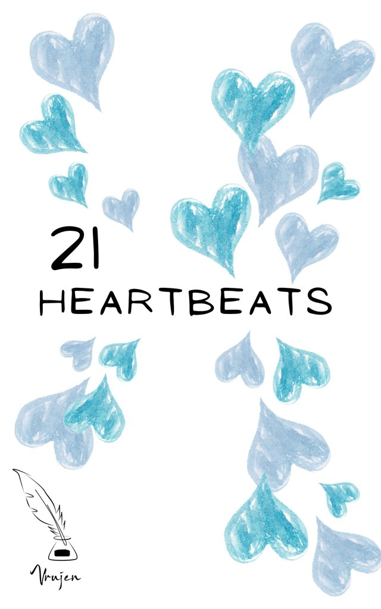
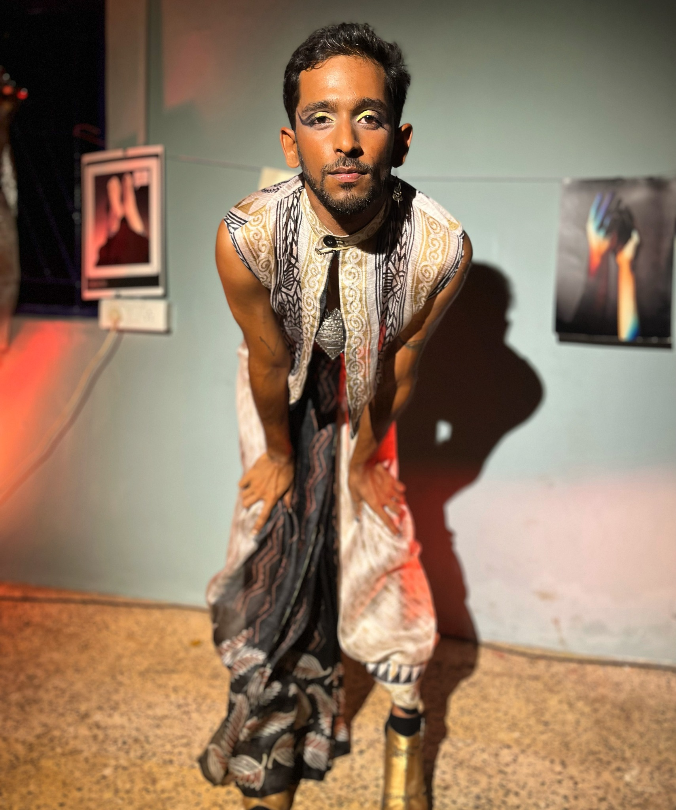
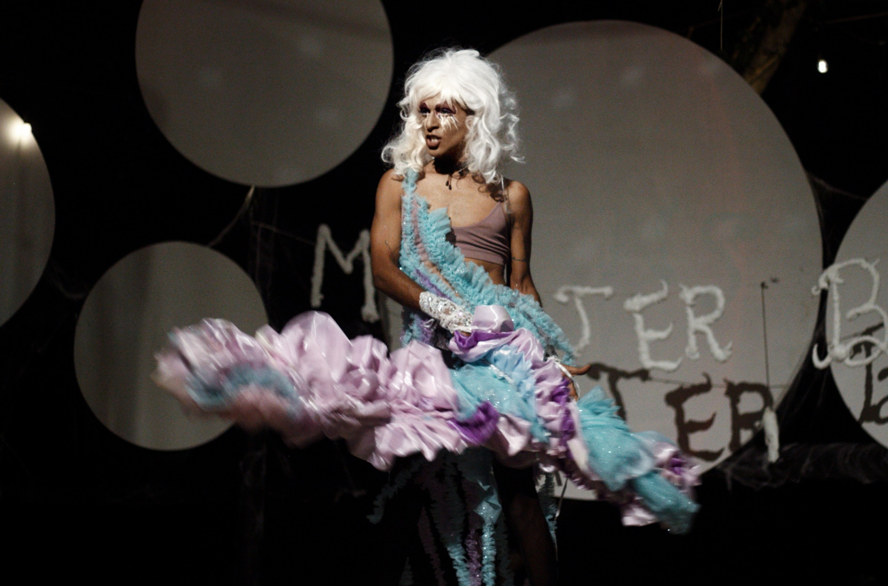
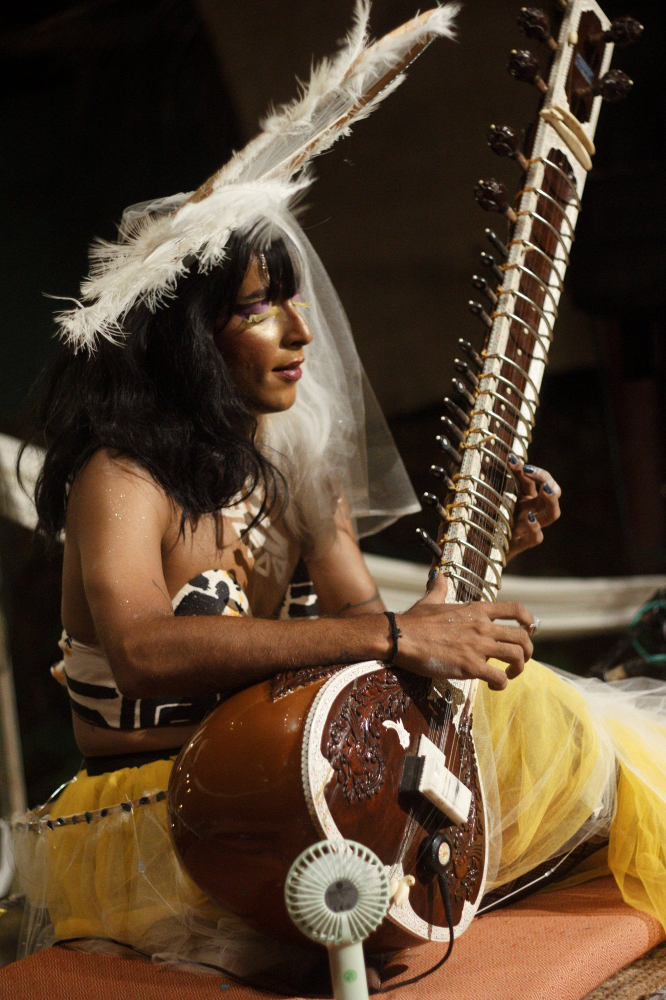
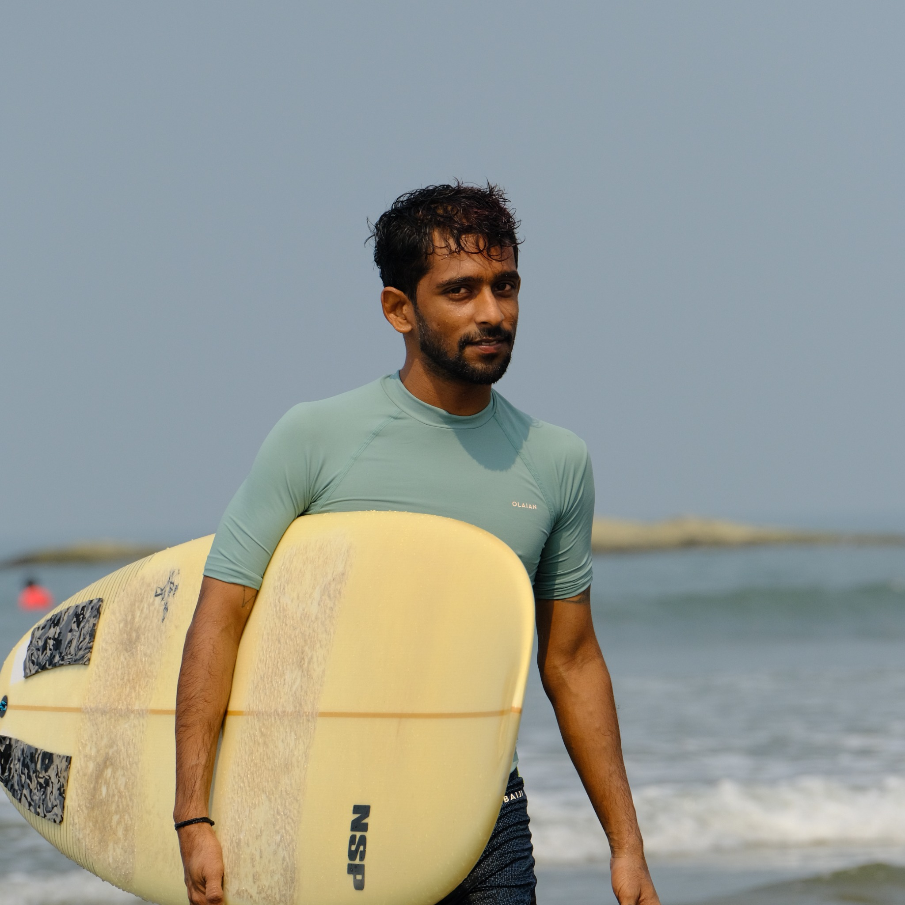
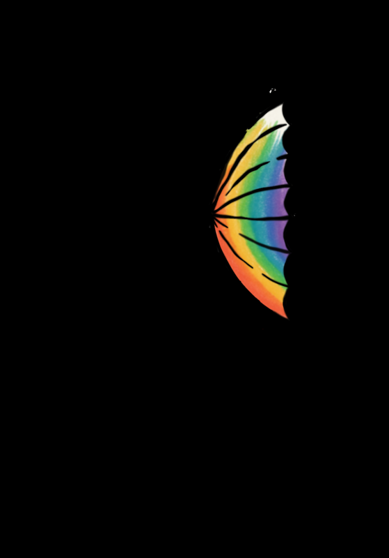
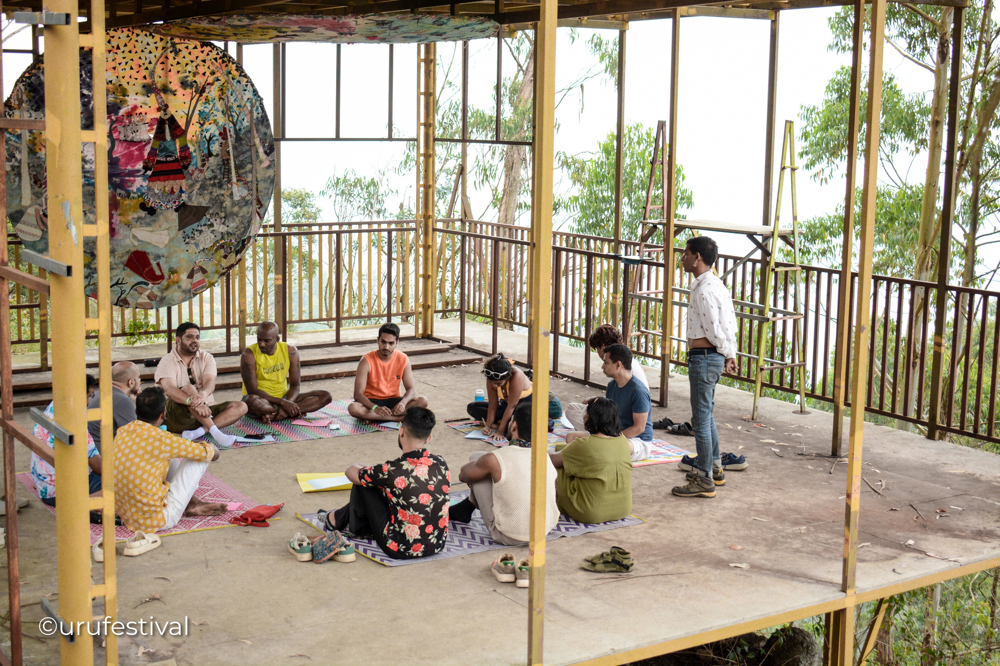
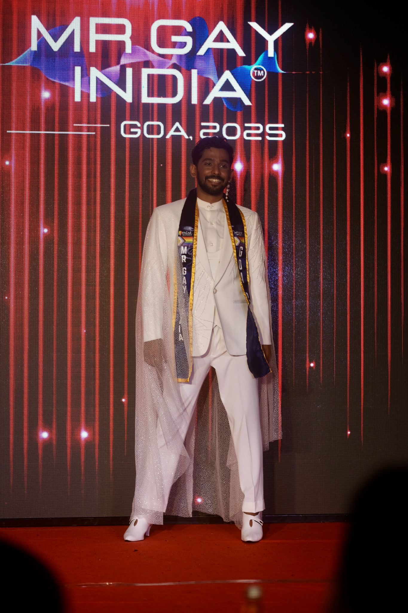

Goa, India · Living heart first
VrujenAndhare
Many lives. One heartbeat.
Scroll to meet them01 / The personI contain
I contain
multitudes.
Vrujen Andhare is a multidisciplinary artist working across music, performance, poetry and curation. Rooted in Hindustani classical music and shaped by movement, travel and queer expression, his work makes room for connection and transformation.
Sometimes with a sitar. Sometimes as Sexwax. Often while bringing people together through A Rainbow Collective.
keep turning the page
02 / Sitar & soundListen
Listen
closely.
Old roots.
New frequencies.
His practice begins in Hindustani classical music and moves through electronic textures, rhythm, improvisation, poetry and spoken word. A set can become a quiet place to listen or a room that moves with him.
On the record · Lost Bhairavi
LIVE SITAR SET
Classical and contemporary music, often with poetry.
DRAG SITAR
Music, movement and theatre as Sexwax.
03 / Another frequency
Sexwax.

Some stories need
a louder body.
Sexwax is Vrujen's drag alter ego: a meeting of sitar, poetry, movement and visual storytelling. Performance becomes a place to transform, play and disrupt expectations.


05 / Between tides
Let it flow.
Somewhere between the stage and the sea, the same instinct: follow the feeling and see where it goes.

06 / Space makingA Rainbow
Collective.
Art happens between people. Vrujen makes room for that.

Curated experiences
Intimate gatherings and immersive events across music, drag, storytelling and conversation.
ARC showcases
A platform for queer expression, collaboration and community.
Hosting
Connecting artists, audiences and ideas through shared moments.
Workshops
Spaces for creativity, reflection, expression and collective care.
07 / Things that happenedOn the
On the
walls.
Mr Gay India · 2025
08 / Heart firstTake up
Take up
space.
“Creating spaces where people feel seen, connected and free.”
As Mr Gay India 2025, Vrujen carries the same belief beyond the stage: visibility can make room for someone else. The crown is one chapter in a much larger practice of art and community.
